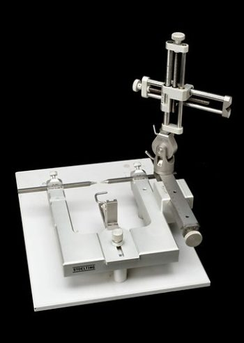

4.3: Invasive Physiological Research Methods
Invasive techniques, such as lesioning brain regions or implanting recording electrodes in the brain, are commonly used in biopsych research with non-human animals. For the experimental procedure, the animal undergoes surgery using a stereotaxic unit that allows precise positioning in the brain (see Figure 4). The stereotaxic unit has two main parts: a head holder to immobilize the head, and an electrode holder, which holds the device to be inserted. After the animal is anesthetized, its head is immobilized in the head holder. To locate target positions in the brain, researchers use a stereotaxic atlas (like a road atlas, but showing locations of brain regions instead of roads and cities). Then the researcher drills a small hole and performs the surgery. In some studies, researchers will lesion or remove a part of the brain; this is called ablation. The surgeon may use a surgical knife, a current-passing electrode, or an aspirating (suction) pipette. After the target region is carefully removed or inactivated, the animal’s behavior is tested to determine the function of the lesioned structure. For example, researchers may remove (sub)components of the amygdala or hypothalamus and test how behavior changes. Studies will often include a control condition, in which control animals receive a sham lesion, wherein they undergo a similar surgical procedure but don’t receive a lesion. This control condition allows researchers to more confidently interpret that the change in behavior stems from the lesioned brain area, rather than the handling, anesthesia, or other ancillary procedures. In other words, the direct manipulation of the brain, coupled with the control condition, allows researchers to make causal claims (something that cannot be done with correlational research methods). After the animal’s death, its brain is often cut into thin slices and stained to highlight neuronal structures. These slices are then examined microscopically to verify the extent and precise location of the lesions.
As an alternative to permanent lesions, researchers can lesion brain regions temporarily. This can be achieved by cooling the target brain tissue or injecting it with an anesthetic. Additionally, electrical stimulation from implanted electrodes can temporarily inactivate or activate targeted brain regions.

In addition to manipulating brain function by damaging or stimulating brain regions, researchers learn about brain function by implanting recording devices directly in animal brains to ‘listen in’ on brain activity. The animal undergoes a stereotaxic surgery wherein a recording device or electrode is inserted into a target area then fixed into position on the skull (see Figure 5). Different types of invasive electrophysiological recording include: intracellular unit recording, wherein a microelectrode is inserted into a single neuron to measure its electrical activity; extracellular recordings that pick up the firing of one nearby neuron (single unit recording) or several adjacent neurons (multiunit recording); and invasive electroencephalography (EEG), wherein a large electrode picks up the electrical brain activity of a large swath of nearby neurons. These electrodes detect neural activity as the animal performs tasks, providing insight into the relationship between neural activity and behavior.
Directly recording from within human brains for research is rare, as invasively opening the skull cannot be ethically justified for research purposes alone. However, some patients who are already undergoing surgery for medical procedures, such as treatments for Parkinson’s disease or epilepsy, might have electrodes placed directly on or in their brains. They occasionally participate in research. Such intracranial (meaning within the skull) electroencephalography (iEEG) or Electrocorticography (ECoG) is a valuable research tool because these direct recordings offer exceptionally clear and precise signals from the brain. However, these patients are rare, and the placement of electrodes is determined by the neurosurgeon and medical needs rather than the research question.
Media Attributions
- YW066573L_Stereotaxic-unit-Chicago-United-States-1980-1999 © Look and Learn is licensed under a CC0 (Creative Commons Zero) license
- Laboratory Rat © Wikimedia is licensed under a CC BY-SA (Attribution ShareAlike) license


A surgical device that immobilizes an animal’s head and allows precise positioning in an animal’s brain using a three-dimensional coordinate system.